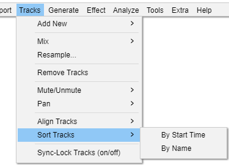

Tracks Menu: Sort Tracks
The Sort Tracks submenu provides commands to sort your tracks by Track Names or the tracks' start times.
- Click, or hover, on any menu item in the image to read about that command. Skip the image
- 
by Start time
Sorts all tracks in the project from top to bottom in the project window. After the sort the top track will have the earliest start time and the bottom track will have the latest start time.
by Name
Sort all tracks in the project alphanumerically by track name. Numbers precede letters, and upper-case letters precede lower case letters. It does not use natural number sort, so "10" comes before "2" (but after "02").